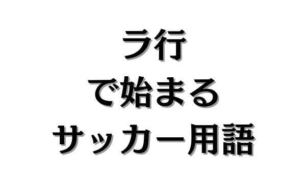

ラ行で始まるサッカー用語


目 次
1. ラで始まるサッカー用語。
ラインコントロール【★★】
ラインコントロールとは、守備戦術の一種で、DF（ディフェンス）ラインの位置や選手のズレをコントロールすることを指します。
CB（センターバック）がラインコントロールをすることが一般的ですが、SB（サイドバック）もラインコントロールができなければいけません。
なぜなら、CBがラインを確認するには左右を見なければいけませんが、SBは一目でラインを確認できます。
そのためSBにもラインコントロールできるだけの判断力やリーダーシップが必須となります。
ランウィズザボール【★★★】
ランウィズザボールとは、ドリブルの一種で、主にスピードを活かしてスペースに進むドリブルを指します。
単純に相手をかわすドリブルとは異なり、広いスペースを活用して前進することを目的としたドリブルです。
2. リで始まるサッカー用語。
リトリート【★★★】
リトリートとは、守備戦術の一種で、相手の攻撃に対してラインを下げて守ることを指します。
ボールを失った後、むやみに奪い返しに行くのではなく、守備ブロックを形成することを優先し、攻撃へのチャンスを捨てる代わりに失点のリスクを抑える戦術です。
リフティング【★】
リフティングとは、ボールを地面に落とさずに足や体を使って連続してコントロールする技術のことを指します。
トレーニングの一環として行われることが多く、ボールタッチの感覚を養うために重要な練習の一つです。
3. ルで始まるサッカー用語。
ルーズボール【★★】
ルーズボールとは、どちらのチームの選手も明確に保持していない状態のボールを指します。
パスミスや競り合い、クリア後などに発生し、瞬時の判断や反応速度が求められる重要な局面です。
ループシュート【★★】
ループシュートとは、ボールを高く浮かせてゴールキーパーの頭上を越すように狙うシュートのことを指します。
特に、前に飛び出しているゴールキーパーの頭上を狙う際に効果的なテクニックです。
4. レで始まるサッカー用語。
レジスタ【★★★】
レジスタとは、選手の役割やプレースタイルを表す言葉の一種で、主に低い位置から試合をコントロールし、攻撃の起点となる役割を担う選手のことを指します。
守備的ミッドフィールダー（DMF）の位置にいるものの、主な役割は守備ではなく、パスやビルドアップを通じて試合を組み立てることにあります。
「Regista」はイタリア語で、「指揮者」「演出家」という意味を持ちます。これは、オーケストラの指揮者のように試合をコントロールする選手であることから名付けられました。
レッドカード【★】
レッドカードとは、重大な反則や危険なプレーを犯した選手に対して主審が提示するカードであり、即退場となることを意味します。
レッドカードが提示されるケース
1．著しく危険なプレー（ラフプレー）
相手選手の安全を脅かすような激しいタックルや危険なスライディング。
2．相手への暴力行為
殴る、蹴る、頭突きをする、相手を押し倒すなどの暴力的な行為。
3．意図的なハンドによる決定機阻止
ゴールへ向かうボールを故意に手で止める（GK以外の選手）。
4．決定的な得点機会の阻止（DOGSO）
明らかに得点が決まりそうな状況で、ファウルによって妨害する。
5．2枚目のイエローカード（累積警告）
1試合で2枚のイエローカードを受けると、自動的にレッドカードとなり退場。
6．暴言・侮辱的な行為
審判や相手選手への過度な抗議、差別的発言など。
5. ロで始まるサッカー用語。
ロスタイム【★】
ロスタイムとは、前半・後半の中で試合が止まった時間を考慮し、追加される時間のことを指します。
正式にはアディショナルタイム（Additional Time）と呼ばれますが、日本では「ロスタイム（失われた時間）」という呼び方が定着しています。
ロスタイムが発生する主な理由
1．選手の負傷による治療時間
怪我をした選手の治療や担架での搬送にかかる時間。
2．選手交代の時間
交代選手が入る際の時間も考慮される。
3．ゴール後のセレブレーション
得点後の歓喜やチームメイトとの祝福によって試合再開が遅れた場合。
4．VAR（ビデオ・アシスタント・レフェリー）のチェック時間
VARでの判定確認による試合の一時中断。
5．遅延行為（タイムウェイスト）
リードしているチームが意図的に試合を遅らせる行為（キーパーの遅延、スローインの遅れなど）。
6．その他の試合中断
ピッチ侵入や天候による一時的な中断など。